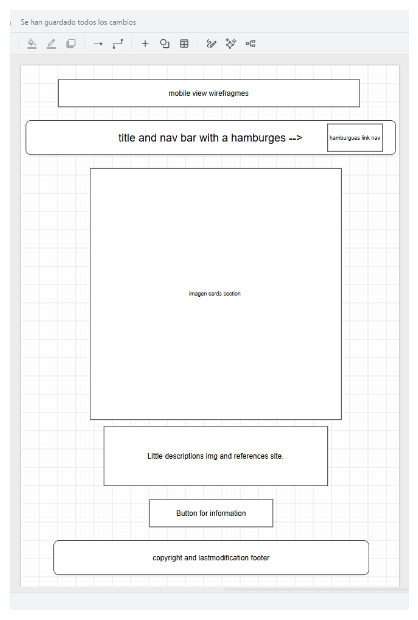
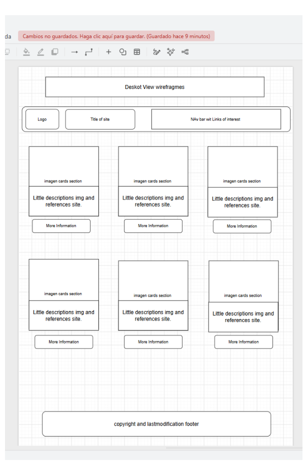

Güiria Tourist
Site name
Güiria Tourist: Güiria is a town in the state of Sucre, Venezuela, known for its beautiful beaches and rich cultural heritage. This project will help provide a bit more visibility for the area's resources and tourist sites, given that the region lacks an official website for them.
Site Purpose
The site will offer those interested in visiting the area detailed information on points of interest such as hotels, beaches, restaurants, and historical sites—as well as details on cultural or local events taking place throughout the year. It will provide users with recommendations to enhance their experience and include a feedback feature allowing them to offer suggestions for improvement.
Scenarios
These are questions asked by potential visitors about the tourist attractions and services available in Güiria.
- What are the best beaches to visit at this time of year, or which rivers might be a better option?
- What historical or cultural heritage sites can I visit during my stay?
- Which restaurants offer dishes typical of the local cuisine?
- Do you have any suggestions for improving our website? Let us know via our feedback form!
Color Schema
The color schema for the site will include For the background, I will use a warm, clean tone (--accent1: #f8f6f0), and a simple yet professional shade for the footer (--accent2: #2b2d42). To bring life and dynamism to the navigation bar, I will use a Caribbean-inspired color (--primary-color: #088395), and for key buttons—such as "Explore" and "Send Feedback" I will use a color designed to draw attention specifically to those elements (--secondary-color: #f05454).
Typography
The typography for the site will be a combination of two fonts: Alegreya and Lato. Alegreya will be used for headings and titles, providing a classic and elegant look, while Lato will be used for body text, ensuring readability and a modern feel. This combination will create a visually appealing and user-friendly experience for visitors.
Wireframes
Mobile View:

Desktop View:
